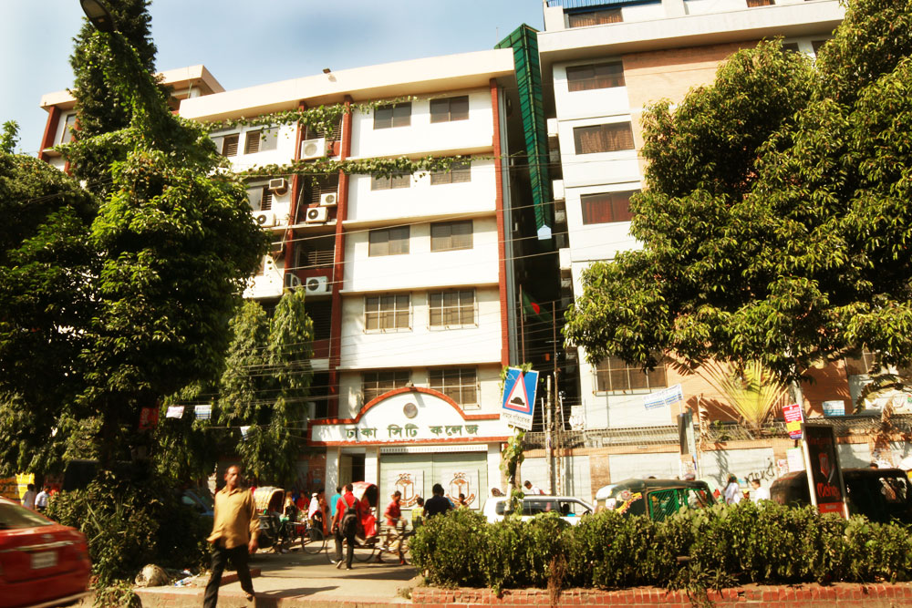
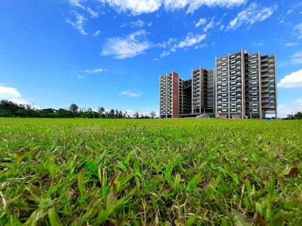

Welcome to Saimon Islam Chamok's Website!!!!!
- Name: Saimon Islam Chamok
- ID: 011202002
- School: Motijheel Govt. Boys High School

- Passing year: 2016
- Find MGBHS on Facebook
- College: Dhaka City College

- Passing Year: 2018
- Find DCC on Facebook
- Currently Studying: United International University

- Official Website of UIU
-
The main reason to take CSE as my major in BS degree is that I always had a curiosity to know about computers , how it was created , how it functions and everything .
It’s not like I got my computer in early age or I had someone who inspired me about computers. The fascination about computers it came naturally within me .
When I get to know more and more about computers my curiosity began to rise. There are also some reasons that also helped me to take CSE as my major.
Computers are in every sector in our day to day life. So the job field is so wide spread across the world. Higher salary and better opportunity are also the reasons to
choose CSE over any subject.Most importantly I enjoy while I use or work in the computers.
Find me on Facebook
Go to page 2